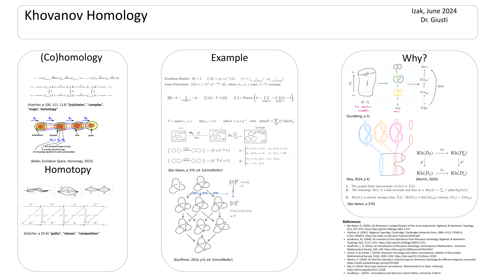

This is an 8-minute presentation I gave. It was my final project for an undergraduate "writing intensive" course on knot theory.
Hi, I’d like to tell you about Khovanov homology with minimal intense algebra and end with an informal example of ribbon concordance. My inspiration was a theorem: “ribbon concordance induces an injective map on Khovanov homology,” based on the work of Levine and Zemke (2019).
Homology is about “cycles” or kernels (inputs that map to zero) of the differential maps modulo those cycles that are “boundaries” or images in sequences of vector spaces. This quotient forms the homology as a group.
The smoothing states of a link diagram form a sequence of vector spaces classes a chain complex (vector space = chain, sequence = complex) that also have isomorphic homology. The order of the sequence is given by differential maps or boundary maps between the vector spaces.
The image of each map is the kernel of the next, until the sequence reaches the trivial kernel, which is just zero.
The homology is the group formed by the quotient of the kernel by image. If you don’t know about groups, just think about these for now as some vector space without scaling. (If you’re unfamiliar with quotients, this is just like quotients with numbers, but instead of saying there are 4 things that look like 3 among 12 things, you separate them by their vector space properties). You can think of this as saying how much of the remaining space looks like the kernel.
This also has a geometric view. The kernels are cycles, or closed loops, for some base point in the vector space. The image is the boundaries in the space. We say boundary in the sense that you can imagine the vector space basis as a graph, right, with basis vectors as vertices?. A boundary is what remains when you remove part of the graph that is one dimension less. For example, removing a line from a triangle or a face from a pyramid/simplex.
When you take two chain complexes and can find two distinct maps between the complexes that pair up their (homology groups) chains/vector spaces the same way, this induces what are called homotopies between the chains or vector spaces.
Recall the Jones and Kauffman polynomials came from defining rules for link brackets.
In thia picture, let \(L\) be the link and \(V\) be a vector space of dimensions \((q + q^{-1})\). The map \(F\) takes a double complex to a single complex by taking direct sums along the diagonals of the double complex. The differential map \(d\) is not yet defined.
The bracket is given by a direct sum over the smoothings of \(L\) of tensor powers of \(V\), where a factor of the powers of \(V\) corresponds to a cycle in a smoothing. That is, the space \(V(k)\) on each vertex \(k\) has as many tensor factors as there are cycles in the smoothing \(S(k)\). These powers behave like spaces of linear combinations of marked smoothings of \(L\), so each cycle in a smoothing of \(L\) corresponds to an element of \(V\).
Khovanov does this similarly, defining his own bracket, with states sums and other definitions similar to Khovanov. For the bracket, he exploits the fact the Euler characteristic of each chain or vector space is the same as the Euler characteristic of the corresponding homology group. Here I must make a slight point, Khovanov homology actually describes a cohomology, where instead of boundary maps taking away components, the maps between chains or vector spaces add components. This Euler characteristic of the Khovanov homology also happens to be the Jones polynomial we talked about.
He also uses that the boundary maps are given by the vector space gradings, or the fact that we can add smoothing states together to form smoothings with fewer components, or as we did with Kauffman, we can add more smoothings to a state to achieve more components. The Khovanov polynomial similarly uses the dimensions of each cohomology for the chain complex of the link states for the corresponding term in the sum defining the polynomial.
A Tensor product in this case is just a way to take any of the basis vectors and put them into a list, where the list is a new basis vector in the new space, and vice versa, taking lists and breaking them apart. You can imagine as the kernel of the vector space shrinks, less of the vector space looks like its kernel, and in a sense at the limit of these boundary maps, we reach the stalk vector space growing out the kernels of the chain complex of vector spaces.
Now stepping back from the chain complex, we can see it forms a cube. And we know this is a chain complex precisely because this cube commutes. That is, taking a boundary map in the first row, then mapping to the second row should be the same as mapping to the second row then taking a boundary map. This also shows that the definitions of the bases or the order of smoothings will not change this chain complex for a given knot.
To wrap up quickly, let’s look at some examples. We have this illustration from (Bar-Natan, 2002) for the trefoil. You can see how moving between the states forms different brackets from their sums, and these brackets form a complex.
You can see boundary maps change the tensor power of the vector space and the degree shift. The tensor power does not change the vector space dimension, but the degree shift does. While these are integer vector spaces, you can think of Euclidean space. If a matrix mapping a vector space to another is rectangular, it deletes one of the basis elements, and the situation is similar here.
Concordance or more broadly cobordism can be seen as a map between Khovanov homologies and is clearly a homotopy between two links as the manifold provides the path mapping. For example, rolling up a sheet of paper into a cylinder and slipping a rubber band around each end connects two unknotted rubber bands. In 4 dimensions, the cylinder might smooth out, untying any knot.
A “path” is a continuous map from an interval to a space. A “homotopy” of paths is a “family of maps” from an interval to a space with the same endpoints where paths follow another path. Think of it as a map from two intervals to the space. A “composition/product path” lets you glue two paths together. As we discussed in class, a “loop” is a path that ends and begins at the same point (i.e., the “basepoint”).
We look at cobordisms or concordance with “movie moves”, looking at different 3-dimensional places in the four dimensional manifold where there are singularities (max, min saddle).
And, we could go both directions, given a concordance between two links, we can find their Khovanov homologies are the same, or given Khovanov homologies between two links, we can find a cobordism between the links.
Khovanov homology also gives combinatorial methods for more abstract homologies in other fields like Floer homologies (3-manifold, Heegaard, Lagrangian).
Further Information for potential questions or extra time:
Ribbon Concordance between two knots has no local minima. Concordance
for two submanifolds M’, M’’ contained in N is a cobordism between them
in N × [0, 1], so a manifold with boundary W contained in N × [0, 1]
whose boundary is M’ × {0} and M’’ × {1}. This is a relative form of
cobordism since it all happens in N. I = [0, 1]. It is a 1-dimensional
cobordism between the 0-dimensional manifolds {0}, {1}. Generally, for
any closed manifold M, (M × I; M × {0} , M × {1} ) is a cobordism from M
× {0} to M × {1}. a homotopy between two continuous functions f and g
from a topological space X to a topological space Y is defined to be a
continuous function ùêª : ùëã × [ 0 , 1 ] ‚Üí ùëå (so from the product of the
space with the unit interval) X × [0,‚Äâ1] to Y) such that ùêª ( ùë• , 0 ) = ùëì
( ùë• ) and ùêª ( ùë• , 1 ) = ùëî ( ùë• ) for all ùë• ‚àà ùëã See then two links,
denoted as l’ within m-sphere and l’’ within n-sphere, are considered
concordant if there exists an embedding function f from l’ × [0,1] to
n-sphere × [0,1]. this function has two conditions: first, the image f (
l’ × [0] ) = l’ × {0}; second, the image f( l’ × {1} = l’’ × {1}. this
forms an equivalence relation. it is a weaker condition than isotopy and
a stronger condition than homotopy, meaning that isotopy implies
concordance/cobordism, (and concordance implies cobordism), and
concordance/cobordism implies homotopy.
Slice Knot concorant with unknot (3d knot bounds disc in 4d) Kh(L)
“Poincaire Polynomial” formal power series in one indeterminate, say t
where the coefficient of t^n gives the dimension (or rank) of the
sub-structure of elements homogeneous of degree n

My professor said this guide was too complicated to put on my poster.
Further reference: